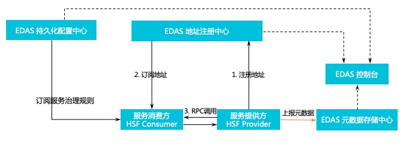

<!DOCTYPE html>


<html lang="zh-CN">


<head>
  <meta charset="utf-8" />
   
  <meta name="keywords" content="Java,Blockchain,代码,面试,学习,摄影,思考" />
   
  <meta name="description" content="阿里内部使用的框架 HSF。" />
  
  <meta name="viewport" content="width=device-width, initial-scale=1, maximum-scale=1" />
  <title>
    HSF 框架简介 |  Shadow.Net
  </title>
  <meta name="generator" content="hexo-theme-ayer">
  
  <link rel="shortcut icon" href="/favicon.ico" />
  
  
<link rel="stylesheet" href="/dist/main.css">

  
<link rel="stylesheet" href="https://cdn.jsdelivr.net/gh/Shen-Yu/cdn/css/remixicon.min.css">

  
<link rel="stylesheet" href="/css/custom.css">

  
  
<script src="https://cdn.jsdelivr.net/npm/pace-js@1.0.2/pace.min.js"></script>

  
  

  
<script>
var _hmt = _hmt || [];
(function() {
	var hm = document.createElement("script");
	hm.src = "https://hm.baidu.com/hm.js?3311bd4794ea0a6b782915def3fc81fa";
	var s = document.getElementsByTagName("script")[0]; 
	s.parentNode.insertBefore(hm, s);
})();
</script>


<link rel="alternate" href="/atom.xml" title="Shadow.Net" type="application/atom+xml">
</head>

</html>

<body>
  <div id="app">
    
      
      <canvas width="1777" height="841"
        style="position: fixed; left: 0px; top: 0px; z-index: 99999; pointer-events: none;"></canvas>
      
    <main class="content on">
      <section class="outer">
  <article
  id="post-Java-Framework-HSF-Introduction"
  class="article article-type-post"
  itemscope
  itemprop="blogPost"
  data-scroll-reveal
>
  <div class="article-inner">
    
    <header class="article-header">
       
<h1 class="article-title sea-center" style="border-left:0" itemprop="name">
  HSF 框架简介
</h1>
 

    </header>
     
    <div class="article-meta">
      <a href="/articles/Java-Framework-HSF-Introduction.html" class="article-date">
  <time datetime="2021-07-22T07:12:57.000Z" itemprop="datePublished">2021-07-22</time>
</a> 
  <div class="article-category">
    <a class="article-category-link" href="/categories/Java/">Java</a>
  </div>
  
<div class="word_count">
    <span class="post-time">
        <span class="post-meta-item-icon">
            <i class="ri-quill-pen-line"></i>
            <span class="post-meta-item-text"> 字数统计:</span>
            <span class="post-count">1.3k</span>
        </span>
    </span>

    <span class="post-time">
        &nbsp; | &nbsp;
        <span class="post-meta-item-icon">
            <i class="ri-book-open-line"></i>
            <span class="post-meta-item-text"> 阅读时长≈</span>
            <span class="post-count">4 分钟</span>
        </span>
    </span>
</div>
 
    </div>
      
    <div class="tocbot"></div>


  
    <div class="article-entry" itemprop="articleBody">
       
  <p>HSF 框架，全称 High Speed Framework，是 Alibaba 内部使用的 RPC 框架，最初于 Dubbo 进行内部竞争，由于多方面的原因最终选择了 HSF。</p>
<p>HSF 作为阿里内部高性能的 RPC 框架，其优点是轻量，高性能，运维成本低的特性，为大规模集群的应用提供了好的基础。</p>
<p>入职前需要掌握的一个框架，HSF，自学的同时也分享给大家。</p>
<span id="more"></span>

<h1 id="HSF-框架简介"><a href="#HSF-框架简介" class="headerlink" title="HSF 框架简介"></a>HSF 框架简介</h1><h2 id="概述"><a href="#概述" class="headerlink" title="概述"></a>概述</h2><p>HSF 连通不同的业务系统，解耦系统间的实现依赖。HSF 从分布式应用的层面，统一了服务的发布与调用方式，从而帮助用户更加方便、快速地开发分布式应用，以及提供或使用公共功能模块。HSF 为用户屏蔽了分布式领域中的各种复杂技术细节，如远程通讯、序列化实现、性能损耗、同步与异步调用方式的实现等。</p>
<h2 id="HSF-架构"><a href="#HSF-架构" class="headerlink" title="HSF 架构"></a>HSF 架构</h2><p>HSF 作为一个纯客户端架构的 RPC 框架，没有服务端集群，所有 HSF 服务调用均是通过服务消费方（Consumer）与服务提供方（Provider）点对点进行。为了实现整套分布式服务体系，HSF 还需要依赖以下外部系统。</p>
<p></p>
<ul>
<li><p>服务提供方</p>
<p>服务提供方绑定了 12200 端口，用于接受请求并提供服务，同时将地址信息发布到地址注册中心。</p>
</li>
<li><p>服务消费方</p>
<p>服务消费者通过地址注册中心订阅服务，根据订阅到的地址信息发起调用，地址注册中心不参与调用。</p>
</li>
<li><p>EDAS 地址注册中心</p>
<p>HSF 依赖注册中心进行服务发现，如果没有注册中心，HSF 只能完成简单的点对点调用。</p>
<p>服务提供端无法将服务信息对外暴露，服务消费端可能已经明确了待调用的服务，但是无法获取该服务。因此注册中心是服务信息的中介，为服务提供了注册与发现的功能。</p>
</li>
<li><p>EDAS 持久化配置中心</p>
<p>持久化的配置中心用于存储HSF服务的各种治理规则，HSF 客户端在启动的过程中向持久化配置中心订阅服务治理规则，如路由规则、归组规则、权重规则等，从而根据规则对调用过程的选址逻辑进行干预。</p>
</li>
<li><p>EDAS 元数据存储中心</p>
<p>元数据指 HSF 服务对应的方法列表以及参数结构等信息。元数据对 HSF 的调用过程不会产生影响，因此元数据存储中心是可选的。由于服务运维的便捷性，HSF 客户端在启动时会将元数据上报到元数据存储中心，方便服务运维。</p>
</li>
<li><p>EDAS 控制台</p>
<p>EDAS 控制台打通了服务地址注册中心、持久化配置中心、元数据存储中心等，为用户提供了服务运维功能，包括服务查询、服务治理规则管理等，提高HSF服务研发的效率、运维的便捷性。</p>
</li>
</ul>
<h2 id="功能"><a href="#功能" class="headerlink" title="功能"></a>功能</h2><p>HSF 作为分布式 RPC 服务框架，支持多种服务的调用方式。</p>
<ul>
<li><p>同步调用</p>
<p>HSF 客户端默认以同步调用的方式消费服务，客户端代码需要同步等待返回结果。</p>
</li>
<li><p>异步调用</p>
<p>对于服务调用的客户端，并非所有 HSF 服务都需要同步等待返回结果。HSF 提供异步调用，帮助客户端无需同步阻塞在 HSF 调用上。HSF 的异步调用，有 Future 调用和 Callback 调用两种。</p>
<ul>
<li><p>Future 调用</p>
<p>客户端在需要获取调用的返回结果时，通过 <code>HSFResponseFuture.getResponse(int timeout)</code> 主动获取结果。</p>
</li>
<li><p>Callback 调用</p>
<p>Callback 调用利用 HSF 内部提供的回调机制，在指定 HSF 服务消费完毕拿到返回结果时，HSF 框架会回调用户实现的<code>HSFResponseCallback</code>接口，客户端通过回调通知的方式获取结果。</p>
</li>
</ul>
</li>
<li><p>泛化调用</p>
<p>对于一般的 HSF 调用来说，HSF 客户端需要依赖服务的二方包，通过依赖二方包中的 API 进行编程调用，获取返回结果。但是泛化调用不需要依赖服务的二方包，可以发起 HSF 调用、获取返回结果。在平台型的产品中，泛化调用的方式可以有效减少平台型产品的二方包依赖，实现系统的轻量级运行。</p>
</li>
<li><p>调用链路 Filter 扩展</p>
<p>HSF 内部设计了调用过滤器，能够主动发现用户的调用过滤器扩展点，将其集成到 HSF 调用链路中，便于扩展方对 HSF 的请求进行扩展处理。</p>
</li>
</ul>
<h2 id="应用开发方式"><a href="#应用开发方式" class="headerlink" title="应用开发方式"></a>应用开发方式</h2><p>使用 HSF 框架开发应用有 Ali-Tomcat 和 Pandora Boot 两种方式。</p>
<ul>
<li>Ali-Tomcat：依赖 Ali-Tomcat 和 Pandora，提供了完整的 HSF 功能，包括服务注册与发现、隐式传参、异步调用、泛化调用和调用链路 Filter 扩展。应用程序须以 WAR 包方式部署。</li>
<li>Pandora Boot：依赖 Pandora，提供了比较完整的 HSF 功能，包括服务注册与发现、异步调用。应用程序编译为可运行的 JAR 包并部署即可。</li>
</ul>
 
      <!-- reward -->
      
      <div id="reword-out">
        <div id="reward-btn">
          打赏
        </div>
      </div>
      
    </div>
    

    <!-- copyright -->
    
    <div class="declare">
      <ul class="post-copyright">
        <li>
          <i class="ri-copyright-line"></i>
          <strong>版权声明： </strong>
          
          本博客所有文章除特别声明外，著作权归作者所有。转载请注明出处！
          
        </li>
      </ul>
    </div>
    
    <footer class="article-footer">
       
<div class="share-btn">
      <span class="share-sns share-outer">
        <i class="ri-share-forward-line"></i>
        分享
      </span>
      <div class="share-wrap">
        <i class="arrow"></i>
        <div class="share-icons">
          
          <a class="weibo share-sns" href="javascript:;" data-type="weibo">
            <i class="ri-weibo-fill"></i>
          </a>
          <a class="weixin share-sns wxFab" href="javascript:;" data-type="weixin">
            <i class="ri-wechat-fill"></i>
          </a>
          <a class="qq share-sns" href="javascript:;" data-type="qq">
            <i class="ri-qq-fill"></i>
          </a>
          <a class="douban share-sns" href="javascript:;" data-type="douban">
            <i class="ri-douban-line"></i>
          </a>
          <!-- <a class="qzone share-sns" href="javascript:;" data-type="qzone">
            <i class="icon icon-qzone"></i>
          </a> -->
          
          <a class="facebook share-sns" href="javascript:;" data-type="facebook">
            <i class="ri-facebook-circle-fill"></i>
          </a>
          <a class="twitter share-sns" href="javascript:;" data-type="twitter">
            <i class="ri-twitter-fill"></i>
          </a>
          <a class="google share-sns" href="javascript:;" data-type="google">
            <i class="ri-google-fill"></i>
          </a>
        </div>
      </div>
</div>

<div class="wx-share-modal">
    <a class="modal-close" href="javascript:;"><i class="ri-close-circle-line"></i></a>
    <p>扫一扫，分享到微信</p>
    <div class="wx-qrcode">
      
    </div>
</div>

<div id="share-mask"></div>  
  <ul class="article-tag-list" itemprop="keywords"><li class="article-tag-list-item"><a class="article-tag-list-link" href="/tags/Java/" rel="tag">Java</a></li><li class="article-tag-list-item"><a class="article-tag-list-link" href="/tags/%E6%A1%86%E6%9E%B6/" rel="tag">框架</a></li><li class="article-tag-list-item"><a class="article-tag-list-link" href="/tags/%E9%98%BF%E9%87%8C/" rel="tag">阿里</a></li></ul>

    </footer>
  </div>

   
  <nav class="article-nav">
    
      <a href="/articles/Java-Framework-HSF-Operation.html" class="article-nav-link">
        <strong class="article-nav-caption">上一篇</strong>
        <div class="article-nav-title">
          
            HSF 应用开发
          
        </div>
      </a>
    
    
      <a href="/articles/Java-Framework-EDAS-Service-Governance.html" class="article-nav-link">
        <strong class="article-nav-caption">下一篇</strong>
        <div class="article-nav-title">EDAS 服务治理</div>
      </a>
    
  </nav>

   
<!-- valine评论 -->
<div id="vcomments-box">
  <div id="vcomments"></div>
</div>
<script src="//cdn1.lncld.net/static/js/3.0.4/av-min.js"></script>
<script src="https://cdn.jsdelivr.net/npm/valine@1.4.14/dist/Valine.min.js"></script>
<script>
  new Valine({
    el: "#vcomments",
    app_id: "pGdwyT4C1SLK3tNu5BiWT5wK-gzGzoHsz",
    app_key: "t07S7p0VCiw6wR6HdlEjli0G",
    path: window.location.pathname,
    avatar: "mp",
    placeholder: "给我的文章加点评论吧~",
    recordIP: true,
  });
  const infoEle = document.querySelector("#vcomments .info");
  if (infoEle && infoEle.childNodes && infoEle.childNodes.length > 0) {
    infoEle.childNodes.forEach(function (item) {
      item.parentNode.removeChild(item);
    });
  }
</script>
<style>
  #vcomments-box {
    padding: 5px 30px;
  }

  @media screen and (max-width: 800px) {
    #vcomments-box {
      padding: 5px 0px;
    }
  }

  #vcomments-box #vcomments {
    background-color: #fff;
  }

  .v .vlist .vcard .vh {
    padding-right: 20px;
  }

  .v .vlist .vcard {
    padding-left: 10px;
  }
</style>

 
     
</article>

</section>
      <footer class="footer">
  <div class="outer">
    <ul>
      <li>
        Copyrights &copy;
        2017-2021
        <i class="ri-heart-fill heart_icon"></i> Shadowalker
      </li>
    </ul>
    <ul>
      <li>
        
        
        
        由 <a href="https://hexo.io" target="_blank">Hexo</a> 强力驱动
        <span class="division">|</span>
        主题 - <a href="https://github.com/Shen-Yu/hexo-theme-ayer" target="_blank">Ayer</a>
        
      </li>
    </ul>
    <ul>
      <li>
        
        
        <span>
  <span><i class="ri-user-3-fill"></i>访问人数:<span id="busuanzi_value_site_uv"></span></s>
  <span class="division">|</span>
  <span><i class="ri-eye-fill"></i>浏览次数:<span id="busuanzi_value_page_pv"></span></span>
</span>
        
      </li>
    </ul>
    <ul>
      
    </ul>
    <ul>
      
    </ul>
    <ul>
      <li>
        <!-- cnzz统计 -->
        
        <script type="text/javascript" src='&lt;script type=&#34;text/javascript&#34; src=&#34;https://s4.cnzz.com/z_stat.php?id=1278565805&amp;web_id=1278565805&#34;&gt;&lt;/script&gt;'></script>
        
      </li>
    </ul>
  </div>
</footer>
      <div class="float_btns">
        <div class="totop" id="totop">
  <i class="ri-arrow-up-line"></i>
</div>

<div class="todark" id="todark">
  <i class="ri-moon-line"></i>
</div>

      </div>
    </main>
    <aside class="sidebar on">
      <button class="navbar-toggle"></button>
<nav class="navbar">
  
  <div class="logo">
    <a href="/"></a>
  </div>
  
  <ul class="nav nav-main">
    
    <li class="nav-item">
      <a class="nav-item-link" href="/">主页</a>
    </li>
    
    <li class="nav-item">
      <a class="nav-item-link" href="/archives">归档</a>
    </li>
    
    <li class="nav-item">
      <a class="nav-item-link" href="/categories">分类</a>
    </li>
    
    <li class="nav-item">
      <a class="nav-item-link" href="/tags">标签</a>
    </li>
    
    <li class="nav-item">
      <a class="nav-item-link" target="_blank" rel="noopener" href="https://mr-shaodwalker.lofter.com/">摄影</a>
    </li>
    
    <li class="nav-item">
      <a class="nav-item-link" href="/schedule">计划</a>
    </li>
    
    <li class="nav-item">
      <a class="nav-item-link" href="/about">关于</a>
    </li>
    
  </ul>
</nav>
<nav class="navbar navbar-bottom">
  <ul class="nav">
    <li class="nav-item">
      
      <a class="nav-item-link nav-item-search"  title="搜索">
        <i class="ri-search-line"></i>
      </a>
      
      
    </li>
  </ul>
</nav>
<div class="search-form-wrap">
  <div class="local-search local-search-plugin">
  <input type="search" id="local-search-input" class="local-search-input" placeholder="Search...">
  <div id="local-search-result" class="local-search-result"></div>
</div>
</div>
    </aside>
    <script>
      if (window.matchMedia("(max-width: 768px)").matches) {
        document.querySelector('.content').classList.remove('on');
        document.querySelector('.sidebar').classList.remove('on');
      }
    </script>
    <div id="mask"></div>

<!-- #reward -->
<div id="reward">
  <span class="close"><i class="ri-close-line"></i></span>
  <p class="reward-p"><i class="ri-cup-line"></i>请我喝杯咖啡吧~</p>
  <div class="reward-box">
    
    <div class="reward-item">
      
      <span class="reward-type">支付宝</span>
    </div>
    
    
    <div class="reward-item">
      
      <span class="reward-type">微信</span>
    </div>
    
  </div>
</div>
    
<script src="/js/jquery-2.0.3.min.js"></script>


<script src="/js/lazyload.min.js"></script>

<!-- Tocbot -->


<script src="/js/tocbot.min.js"></script>

<script>
  tocbot.init({
    tocSelector: '.tocbot',
    contentSelector: '.article-entry',
    headingSelector: 'h1, h2, h3, h4, h5, h6',
    hasInnerContainers: true,
    scrollSmooth: true,
    scrollContainer: 'main',
    positionFixedSelector: '.tocbot',
    positionFixedClass: 'is-position-fixed',
    fixedSidebarOffset: 'auto'
  });
</script>

<script src="https://cdn.jsdelivr.net/npm/jquery-modal@0.9.2/jquery.modal.min.js"></script>
<link rel="stylesheet" href="https://cdn.jsdelivr.net/npm/jquery-modal@0.9.2/jquery.modal.min.css">
<script src="https://cdn.jsdelivr.net/npm/justifiedGallery@3.7.0/dist/js/jquery.justifiedGallery.min.js"></script>

<script src="/dist/main.js"></script>

<!-- ImageViewer -->

<!-- Root element of PhotoSwipe. Must have class pswp. -->
<div class="pswp" tabindex="-1" role="dialog" aria-hidden="true">

    <!-- Background of PhotoSwipe. 
         It's a separate element as animating opacity is faster than rgba(). -->
    <div class="pswp__bg"></div>

    <!-- Slides wrapper with overflow:hidden. -->
    <div class="pswp__scroll-wrap">

        <!-- Container that holds slides. 
            PhotoSwipe keeps only 3 of them in the DOM to save memory.
            Don't modify these 3 pswp__item elements, data is added later on. -->
        <div class="pswp__container">
            <div class="pswp__item"></div>
            <div class="pswp__item"></div>
            <div class="pswp__item"></div>
        </div>

        <!-- Default (PhotoSwipeUI_Default) interface on top of sliding area. Can be changed. -->
        <div class="pswp__ui pswp__ui--hidden">

            <div class="pswp__top-bar">

                <!--  Controls are self-explanatory. Order can be changed. -->

                <div class="pswp__counter"></div>

                <button class="pswp__button pswp__button--close" title="Close (Esc)"></button>

                <button class="pswp__button pswp__button--share" style="display:none" title="Share"></button>

                <button class="pswp__button pswp__button--fs" title="Toggle fullscreen"></button>

                <button class="pswp__button pswp__button--zoom" title="Zoom in/out"></button>

                <!-- Preloader demo http://codepen.io/dimsemenov/pen/yyBWoR -->
                <!-- element will get class pswp__preloader--active when preloader is running -->
                <div class="pswp__preloader">
                    <div class="pswp__preloader__icn">
                        <div class="pswp__preloader__cut">
                            <div class="pswp__preloader__donut"></div>
                        </div>
                    </div>
                </div>
            </div>

            <div class="pswp__share-modal pswp__share-modal--hidden pswp__single-tap">
                <div class="pswp__share-tooltip"></div>
            </div>

            <button class="pswp__button pswp__button--arrow--left" title="Previous (arrow left)">
            </button>

            <button class="pswp__button pswp__button--arrow--right" title="Next (arrow right)">
            </button>

            <div class="pswp__caption">
                <div class="pswp__caption__center"></div>
            </div>

        </div>

    </div>

</div>

<link rel="stylesheet" href="https://cdn.jsdelivr.net/npm/photoswipe@4.1.3/dist/photoswipe.min.css">
<link rel="stylesheet" href="https://cdn.jsdelivr.net/npm/photoswipe@4.1.3/dist/default-skin/default-skin.min.css">
<script src="https://cdn.jsdelivr.net/npm/photoswipe@4.1.3/dist/photoswipe.min.js"></script>
<script src="https://cdn.jsdelivr.net/npm/photoswipe@4.1.3/dist/photoswipe-ui-default.min.js"></script>

<script>
    function viewer_init() {
        let pswpElement = document.querySelectorAll('.pswp')[0];
        let $imgArr = document.querySelectorAll(('.article-entry img:not(.reward-img)'))

        $imgArr.forEach(($em, i) => {
            $em.onclick = () => {
                // slider展开状态
                // todo: 这样不好，后面改成状态
                if (document.querySelector('.left-col.show')) return
                let items = []
                $imgArr.forEach(($em2, i2) => {
                    let img = $em2.getAttribute('data-idx', i2)
                    let src = $em2.getAttribute('data-target') || $em2.getAttribute('src')
                    let title = $em2.getAttribute('alt')
                    // 获得原图尺寸
                    const image = new Image()
                    image.src = src
                    items.push({
                        src: src,
                        w: image.width || $em2.width,
                        h: image.height || $em2.height,
                        title: title
                    })
                })
                var gallery = new PhotoSwipe(pswpElement, PhotoSwipeUI_Default, items, {
                    index: parseInt(i)
                });
                gallery.init()
            }
        })
    }
    viewer_init()
</script>

<!-- MathJax -->

<script type="text/x-mathjax-config">
  MathJax.Hub.Config({
      tex2jax: {
          inlineMath: [ ['$','$'], ["\\(","\\)"]  ],
          processEscapes: true,
          skipTags: ['script', 'noscript', 'style', 'textarea', 'pre', 'code']
      }
  });

  MathJax.Hub.Queue(function() {
      var all = MathJax.Hub.getAllJax(), i;
      for(i=0; i < all.length; i += 1) {
          all[i].SourceElement().parentNode.className += ' has-jax';
      }
  });
</script>

<script src="https://cdn.jsdelivr.net/npm/mathjax@2.7.6/unpacked/MathJax.js?config=TeX-AMS-MML_HTMLorMML"></script>
<script>
  var ayerConfig = {
    mathjax: true
  }
</script>

<!-- Katex -->

<!-- busuanzi  -->


<script src="/js/busuanzi-2.3.pure.min.js"></script>


<!-- ClickLove -->

<!-- ClickBoom1 -->

<!-- ClickBoom2 -->


<script src="/js/clickBoom2.js"></script>


<!-- CodeCopy -->


<link rel="stylesheet" href="/css/clipboard.css">

<script src="https://cdn.jsdelivr.net/npm/clipboard@2/dist/clipboard.min.js"></script>
<script>
  function wait(callback, seconds) {
    var timelag = null;
    timelag = window.setTimeout(callback, seconds);
  }
  !function (e, t, a) {
    var initCopyCode = function(){
      var copyHtml = '';
      copyHtml += '<button class="btn-copy" data-clipboard-snippet="">';
      copyHtml += '<i class="ri-file-copy-2-line"></i><span>COPY</span>';
      copyHtml += '</button>';
      $(".highlight .code pre").before(copyHtml);
      $(".article pre code").before(copyHtml);
      var clipboard = new ClipboardJS('.btn-copy', {
        target: function(trigger) {
          return trigger.nextElementSibling;
        }
      });
      clipboard.on('success', function(e) {
        let $btn = $(e.trigger);
        $btn.addClass('copied');
        let $icon = $($btn.find('i'));
        $icon.removeClass('ri-file-copy-2-line');
        $icon.addClass('ri-checkbox-circle-line');
        let $span = $($btn.find('span'));
        $span[0].innerText = 'COPIED';
        
        wait(function () { // 等待两秒钟后恢复
          $icon.removeClass('ri-checkbox-circle-line');
          $icon.addClass('ri-file-copy-2-line');
          $span[0].innerText = 'COPY';
        }, 2000);
      });
      clipboard.on('error', function(e) {
        e.clearSelection();
        let $btn = $(e.trigger);
        $btn.addClass('copy-failed');
        let $icon = $($btn.find('i'));
        $icon.removeClass('ri-file-copy-2-line');
        $icon.addClass('ri-time-line');
        let $span = $($btn.find('span'));
        $span[0].innerText = 'COPY FAILED';
        
        wait(function () { // 等待两秒钟后恢复
          $icon.removeClass('ri-time-line');
          $icon.addClass('ri-file-copy-2-line');
          $span[0].innerText = 'COPY';
        }, 2000);
      });
    }
    initCopyCode();
  }(window, document);
</script>


<!-- CanvasBackground -->


<script src="/js/dz.js"></script>


    
  </div>
<script src="/live2dw/lib/L2Dwidget.min.js?094cbace49a39548bed64abff5988b05"></script><script>L2Dwidget.init({"log":false,"pluginJsPath":"lib/","pluginModelPath":"assets/","pluginRootPath":"live2dw/","tagMode":false});</script></body>

</html>